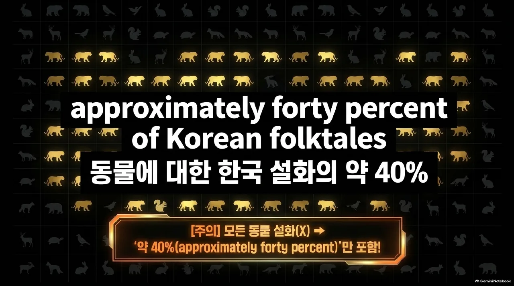
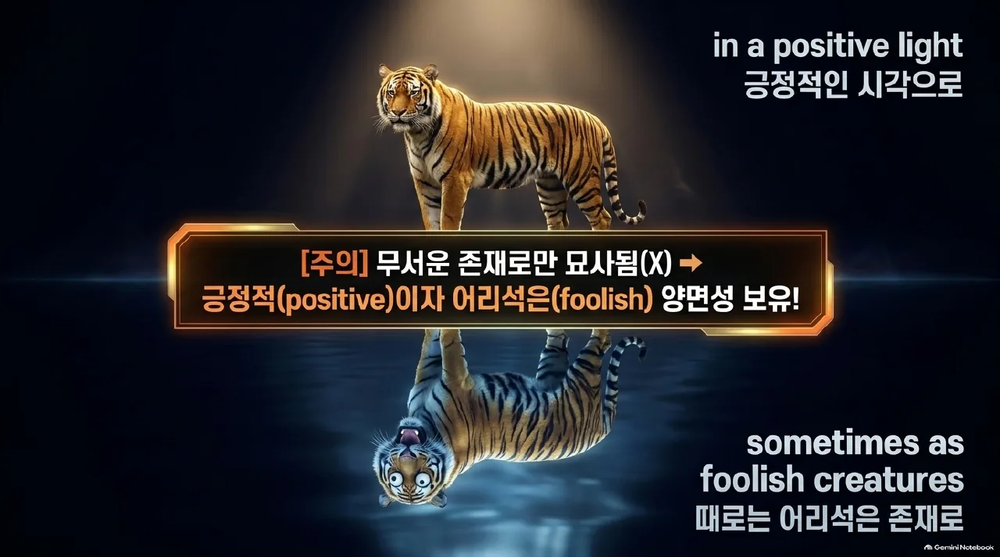
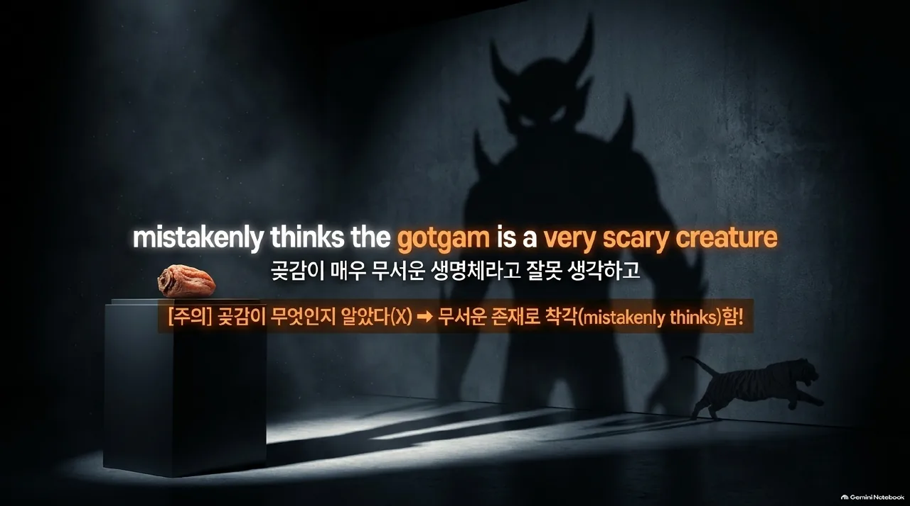
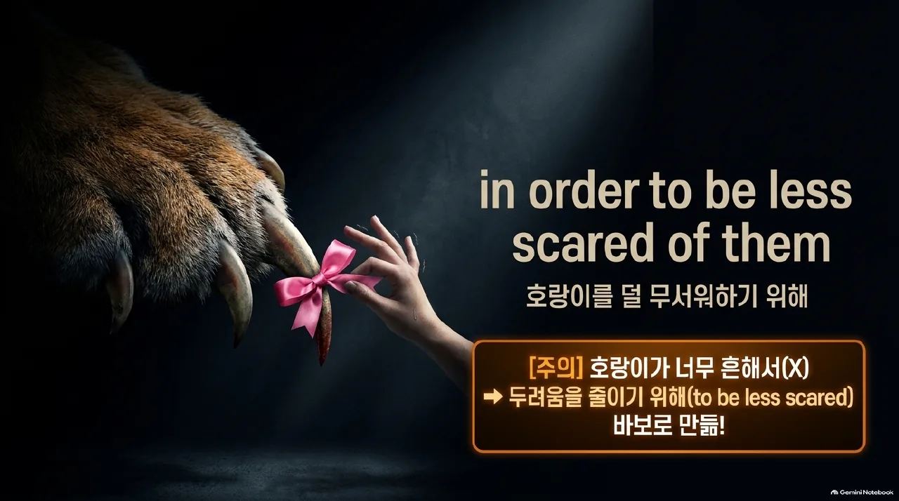
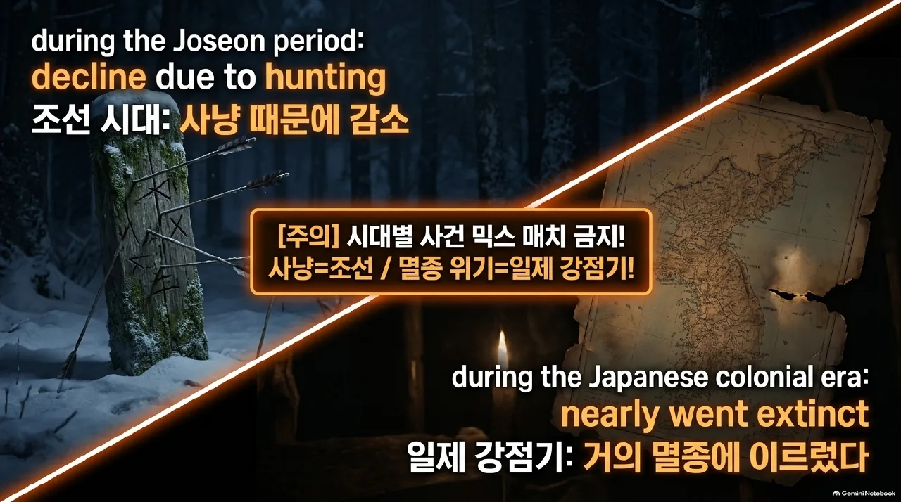
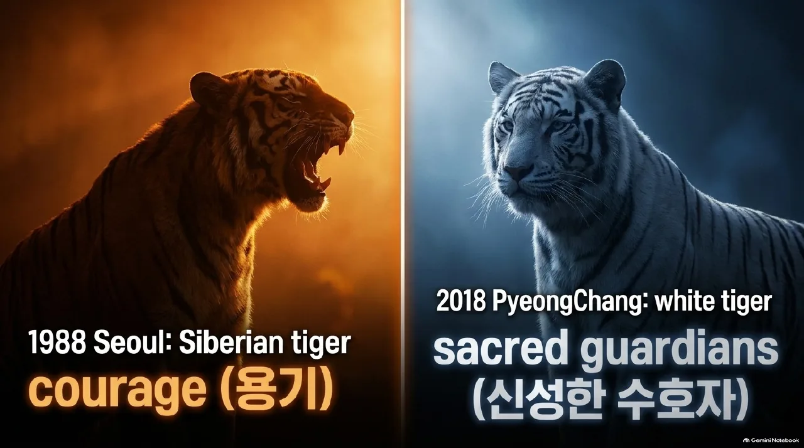

3과 좌본문우해석
영어 조각과 해석 조각이 순서대로 짝이에요. 읽으면서 영어 → 한글 순서로 이어 보세요.
① 책이 된 호랑이 이야기
1
Children around the world
전 세계의 아이들은
learned a bit more about Korean culture
한국 문화에 대해 조금 더 알게 되었다
when writer Tae Keller published her book When You Trap a Tiger in 2020
작가 Tae Keller가 2020년에 그녀의 책 When You Trap a Tiger를 출판했을 때
2
Its story starts with a girl
그것의(=책의) 이야기는 한 소녀로부터 시작된다
who meets a tiger
호랑이를 만나는
3
Her grandmother knows the tiger as well
그녀의 할머니 역시 그 호랑이를 알고 있다
4
When her grandmother gets sick,
그녀의 할머니가 아프게 되자
the girl makes a deal with the tiger
그 소녀는 그 호랑이와 거래를 한다
5
Keller’s inspiration for her award-winning book
Keller의 수상 도서에 대한 영감은
was an old folktale
옛 설화였다
that her halmoni (grandmother) used to tell her
그녀의 할머니가 그녀에게 이야기해 주던
6
It is called “The Sun and the Moon,”
그것은(=옛 설화) ‘해님 달님’이라고 불리는데
and it is about a brother, a sister, and a tiger
오빠와 여동생, 그리고 호랑이에 관한 내용이다
7
Keller wanted to revive the public’s interest in tigers
Keller는 호랑이에 대한 대중의 흥미를 되살리고 싶어 했다
by writing her own book
그녀 자신의 책을 씀으로써
② 한국 문화 속 호랑이
1
How is the tiger related to Korean culture
호랑이는 한국의 문화와 어떻게 연관되는가
2
Long ago, tigers were so abundant in Korea
오래 전 한국에는 호랑이가 매우 많아서
that people often called the country the “Land of Tigers”
사람들은 종종 그 나라를 ‘호랑이의 땅’이라고 불렀다
3
It is estimated that tigers lived in Korea for at least 100,000 years
호랑이가 한국에 적어도 십만 년 동안 살았다고 추정된다
4
The first appearance of a tiger in Korean culture
한국 문화에서 호랑이의 첫 번째 등장은
dates back to the rock art of the Bronze Age
청동기 시대의 바위 그림으로 거슬러 올라간다
5
It depicts people hunting various animals, including tigers
그것은(=바위 그림) 호랑이를 포함하여 다양한 동물을 사냥하는 사람들을 묘사한다
6
Since then, tigers have appeared in many aspects of Korean culture,
그때부터 호랑이는 한국 문화의 많은 측면에 등장해 왔다
from legends to art and musical instruments
전설에서부터 미술과 악기에 이르기까지
7
Some of you may have heard Korean folktales featuring tigers
여러분 중 일부는 호랑이가 등장하는 한국 설화를 들어 봤을지도 모른다
8
In fact, approximately forty percent of Korean folktales about animals
사실 동물에 대한 한국 설화의 약 40%가
include a tiger
호랑이를 포함한다

9
Tigers in Korean folktales are sometimes shown in a positive light
한국 설화에서 호랑이는 때로는 긍정적인 시각으로 보여진다
and sometimes as foolish creatures
그리고 때로는 어리석은 존재로

10
For example, in one story, a tiger helps a human become rich
예를 들어 한 이야기에서 호랑이는 한 인간이 부유해지도록 돕는다
after the human saves the tiger’s life
그 인간이 그 호랑이의 생명을 구해 준 이후
③ 엇갈린 감정과 되살아난 상징
1
In another story, a tiger hears a mother tell her crying baby,
또 다른 이야기에서 호랑이는 한 어머니가 울고 있는 자신의 아기에게 말하는 것을 듣는다
“Don’t cry. Here’s a gotgam”
“울지 마. 여기 곶감이 있단다.”라고
2
Because the baby stops crying,
그 아기가 울기를 멈추기 때문에
the tiger mistakenly thinks the gotgam is a very scary creature
호랑이는 그 곶감이 매우 무서운 생명체라고 잘못 생각하고
and runs away
달아난다

3
It seems that people at the time had conflicting feelings about tigers
그 당시 사람들이 호랑이에 대해 상충되는 감정을 지니고 있었던 것으로 보인다
4
They had respect for tigers’ power and courage
그들은 호랑이의 힘과 용기에 대한 존경심이 있었다
5
However, they were also scared of tigers
그러나 그들은 호랑이를 무서워하기도 했다
because being injured or even killed by tigers was common in the past
호랑이에게 상처를 입거나 심지어 죽임을 당하는 일이 과거에는 흔했기 때문에
6
They may have made tigers into foolish characters
그들은 호랑이를 어리석은 캐릭터로 만들었을지도 모른다
in order to be less scared of them
호랑이를 덜 무서워하기 위해

7
Tigers in Korea faced a decline in population
한국의 호랑이들은 개체 수 감소에 직면했다
due to hunting during the Joseon period
조선 시대 동안 사냥 때문에
and nearly went extinct during the Japanese colonial era
그리고 일제 강점기 동안 거의 멸종에 이르렀다

8
With the disappearance of tigers in Korea,
한국에서 호랑이가 사라지면서
their use as a symbol of the nation faded away
국가의 상징으로서의 그들의 용도도 희미해졌다
9
However, their symbolism was revived in modern times
그러나 그들의 상징성은 현대에 되살아났다
through their selection as the mascot for both Olympics hosted by Korea
한국에서 열린 두 올림픽의 마스코트로 선정되면서
10
Hodori was the mascot for the Seoul Summer Olympics in 1988
호돌이는 1988년 서울 하계 올림픽의 마스코트였다
11
It was a Siberian tiger,
그것은(=호돌이) 시베리안 호랑이였다
which represents courage
용기를 상징하는
12
The PyeongChang Winter Olympics in 2018
2018년 평창 동계 올림픽은
created Soohorang, a white tiger, as its mascot
백호인 수호랑을 그 올림픽의 마스코트로 만들었다
13
White tigers are considered sacred guardians
백호는 신성한 수호자로 여겨진다

④ 오늘날의 호랑이
1
Tigers are also mentioned in the K-pop song “Tiger is Coming”
호랑이는 또한 한국 대중가요 ‘범 내려온다’에도 언급된다
2
One verse of the song
이 노래의 한 구절(가사)은
is a reinterpreted version of “Sugungga,”
‘수궁가’의 재해석판이다
which is a traditional Korean song
한국의 전통 가곡인
3
The song drew worldwide attention,
그 노래는 세계적인 주목을 끌었고
and its video was viewed millions of times online
그것의 영상은 온라인에서 수백만 회 시청되었다
4
These days, only a few wild tigers have been reported
오늘날 단지 소수의 야생 호랑이만이 보고되어 왔다
to be living in North Korea
북한에 살고 있다고
5
However, the history, stories, and cultural meaning of tigers
그러나 호랑이의 역사, 이야기, 그리고 문화적 의미는
still have a place among modern Korean people
현대 한국 사람들 사이에 여전히 자리하고 있다
6
Who can deny
누가 부정할 수 있을까
that the tiger is a symbol of Korea
호랑이가 한국의 상징이라는 점을
7
In 2021, the National Folk Museum of Korea published a book
2021년에 국립 민속 박물관은 책을 출판했다
that collects all the stories about tigers in Korea
한국의 호랑이에 관한 모든 이야기를 모은
8
How about looking for tigers around you now
이제 여러분 주변에서 호랑이를 찾아보는 것은 어떨까
비타민 영어클리닉 · 청석고 공통영어2